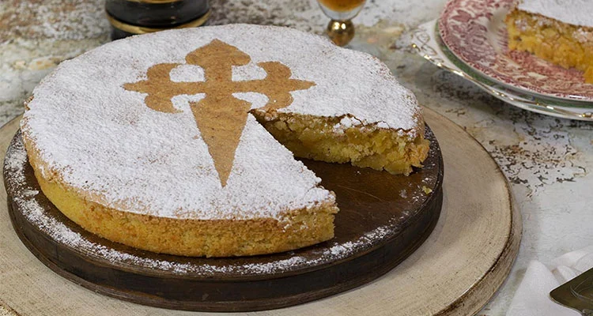

Spanish Almond Cake (Tarta de Santiago)
Description
This delicious Spanish almond cake is one of the most popular desserts in all of Spain. My traditional tarta de Santiago recipe combines ground almonds, sugar, and eggs for a quick, moist, (and gluten free!) cake that’s easy to make at home in less than one hour!
Ingredients
- 2 cups ground almonds Very full cups (250 g)
- 1 1/4 cups sugar (250 g)
- 5 eggs
- lemon zest from half a lemon
- 1 tsp ground cinnamon
- 1 tbsp liquor (15 ml) - Your preference
- Powdered sugar to dust
Steps
- Crack the eggs into a large bowl and add the sugar. Beat until the mixture lightens in color then add the lemon zest.
- Add the liquor and the cinnamon and mix well. Then fold in the ground almonds.
- Grease a mold and add the batter. Bake at 350°F (175°C) for 30-40 minutes (until light brown and a toothpick comes out clean).
- When the cake is done, allow it to cool. Then use a stencil to make the shape of the Saint James cross on top. Cover the cake with the cutout and dust with powdered sugar. When totally covered, carefully remove the stencil. Voila! A beautiful tarta de Santiago!